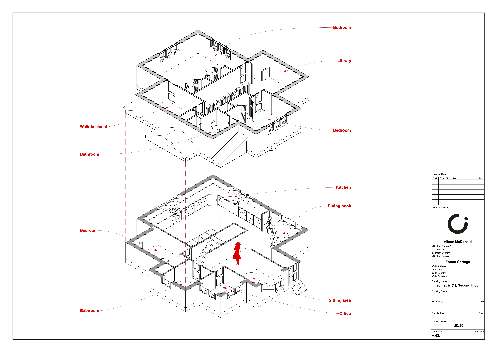

Forest Cottage
Architectural design for a small 2-storey cottage, displayed in isometric view.
I had a lot of fun drafting this out and even more fun diagramming it! Archicad is such an amazing piece of software and I am always finding new ways to improve my work with it. This time, it was isometric views!
